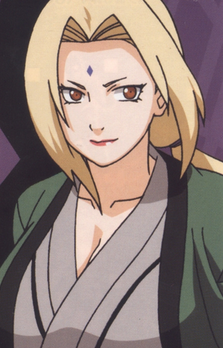
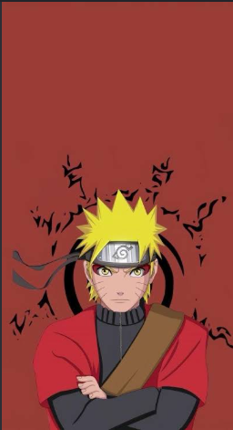
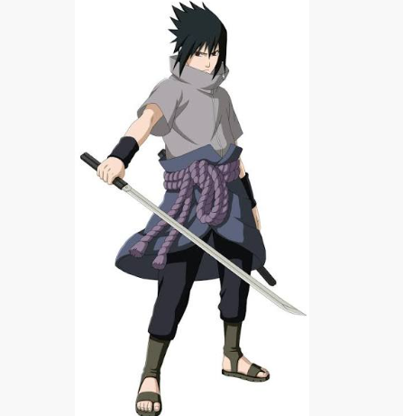
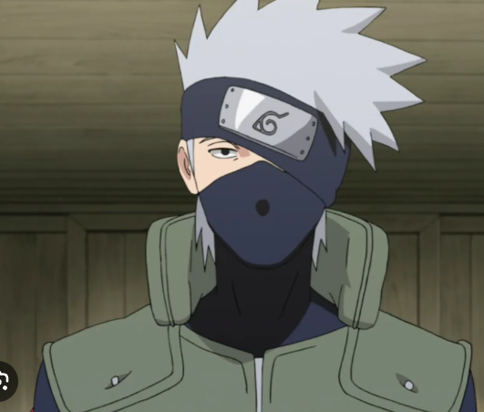
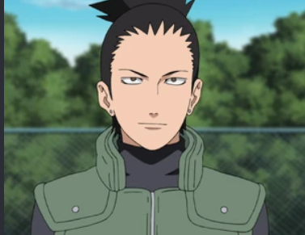

If you want to be the next hokage, then you can apply through this site.





When the tree leaves dance, one shall find flames. The fire's shadow will illuminate the village, and once again, tree leaves shall bud anew.
-Sarutobi Hiruzen
If you think you are worthy to be the hokage , then apply now!
Copyright © Konoha Village